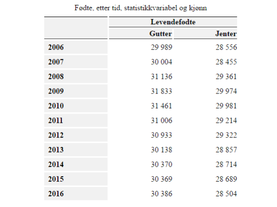

Oppgavene er tredelt etter vanskegrad, i tillegg er det en litt større oppsummerende oppgave. Jeg anbefaler at dere både gjør oppgaver på det nivået der dere står i dag og det nivået dere sikter etter på prøven.
Grunnleggende oppgaver
a) Lag en array med 7 tilfeldige tall mellom 1 og 10
Bruk en løkke sammen med if-setninger til å finne det minste tallet i arrayen
Bruk en løkke sammen med if-setninger til å finne det største tallet i arrayen
b) Definer en array med fem forskjellige matvarer
Skriv kode som logger den tredje matvaren i arrayen til konsollen.
Skriv kode som fjerner den siste matvaren fra arrayen.
Skriv kode som fjerner den andre matvaren fra arrayen.
Skriv kode som legger til tre nye matvarer i arrayen (du velger selv plassering i arrayen).
Skriv kode som viser hvor mange matvarer du har i arrayen.
Sorter matvarene alfabetisk ved bruk av en innebygget funksjon.
c) Oppgaver i boka på grunnleggende nivå:
s. 190: oppgave 12.1, 12.2
s. 191: oppgave 12.3
s. 192: oppgave 12.4, 12.5
s. 193: oppgave 12.6, 12.7
s. 195: oppgave 12.8, 12.9
s. 196: oppgave 12.10
d) Utvidelse av quizoppgave i kapittel 12.4:
Implementer din egen quiz med minst fire spørsmål, med utgangspunkt i koden fra kapittelnotatene.
Stilsett nettsiden slik at den ser mer oversiktlig ut.
Skriv kode slik at galt svar gir minuspoeng.
Middels oppgaver
a) Bubblesortrepetisjon:
Lag en array med 7 tilfeldige tall mellom -10 og 10
Sorter arrayen i stigende rekkefølge ved å sjekke om tallet er større enn det neste tallet og i såfall bytte plass, uten å bruke noen innebygd funksjon
Lag en funksjon som tar inn lengden til en array, fyller den med tilfeldige tall og sorterer den ved å sjekke om tallet er mindre enn det forrige og så bytte plass, uten å bruke noen innebygd funksjon
b) Deklarer en array mineTall med åtte ulike tall.
Bruk en løkke for å finne summen av tallene. Logg summen til konsollen.
Ta ut det første og det siste tallet i arrayen.
Legg til et nytt tall i midten av arrayen. Dette blir det fjerde tallet i arrayet, siden det er 6 igjen etter at du tok ut to tall.
Bruk svg til å tegne opp 7 sirkler med 100 piksler mellomrom mellom sentrum av hver sirkel. La sirklene få diameter lik verdiene av tallene i arrayen. Bruk en løkke som går gjennom arrayen når du skal skrive koden
c) Lag en array som inneholder fire linjer med tre elementer der du lagrer informasjonen
Navn Alder Favorittmat (eller annet dersom dere har bedre ideer) til fire ulike personer
Skriv ut alderene på en nettside
Fjern den andre personen og skriv ut alderene på nytt
d) Lagre den samme informasjonen som i oppgave c) i objects i kombinasjon med arrays.
Skriv ut informasjonen som en tabell på en nettside
Fjern den andre personen og skriv ut informasjonen på nytt
e) Oppgaver i boka på middels nivå:
s. 199: oppgave 12.11, 12.12, 12.13
f) Utvidelse av quizoppgave i kapittel 12.4:
Gi bruker en tilbakemelding som er avhengig av antall poeng oppnådd (f.eks. "Du fikk 0 poeng. Det er dårlig").
Skriv kode slik at det er obligatorisk å svare på alle spørsmål.
Utvid quizen til å ta inn ett svar som nedtrekksmeny (select, option).
Utvid quizen til å kunne ha flere riktige svar i ett spørsmål (checkbox).
Vanskeligere oppgaver
a) Lag et tre på rad-spill ved å lage en 3x3-array som oppdateres og skriver ut nytt resultat hver gang en brikke blir plassert.
Skriv resultatene til en tabell på en nettside der hver celle har en lytter og fylles med enten kryss eller runding.
b) Lag et HTML-dokument med et tekstfelt og en knapp. Dokumentet skal også inneholde to CSS-klasser, den ene med en rød bakgrunnsfarge og den andre med en grønn bakgrunnsfarge.
Legg til 6 < p >-elementer. Det første skal brukes til beskjeder som du skal lage med JavaScript senere. De fem neste skal tilhøre en CSS-klasse med grønn bakgrunnsfarge. PS: tomme < p >-elementer uten størrelse blir ikke synlige.
Lag en array som inneholder et løsningsord. Bokstavene skal utgjøre verdiene i arrayen, slik at første bokstav i løsningsordet har indeks 0, andre har indeks 1, osv.
Når en bruker gjetter en bokstav (skriver en bokstav i tekstfeltet og trykker på knappen), skal følgende skje:
- Alle gjettede bokstaver skal registreres i en array med navnet gjettedeBokstaver. Du kan anta at brukeren alltid skriver inn én bokstav og at hver bokstav er en ny bokstav (brukeren gjetter ikke samme bokstav to ganger).
- Programmet skal sjekke om den gjettede bokstaven er i løsningsordet. Hvis den er det skal bokstaven plasseres i en array med navnet riktigeBokstaver (på riktig posisjon, slik at en bokstav som er på posisjon to i løsningsordet skal havne på posisjon to i riktigeBokstaver). Hvis den ikke er det, skal et av de fargede < p >-elementene skifte farge til rød (for å indikere at brukeren har brukt opp én sjanse).
- Programmet skal til enhver tid skrive ut følgende informasjon på nettsiden:
- antall bokstaver i løsningsordet
- antall bokstaver gjettet totalt
- riktige bokstaver så langt
- en sortert liste over alle gjettede bokstaver
- Hvis brukeren har gjettet alle bokstavene i løsningsordet, eller alle de fem < p >-elementene har blitt røde, skal det dukke opp en passende beskjed til brukeren om at spillet er over
c) Utvidelse av quizoppgave i kapittel 12.4:
Utvid quizen til å kunne ha tekstsvar på ett spørsmål.
Skriv kode slik at ett spørsmål vises av gangen.
d) Tabellen fra Statistisk sentralbyrå på neste side viser antall levendefødte barn (gutter og jenter) mellom 2006 og 2016.
Lag en applikasjon som viser data fra perioden 2010-2016 i en tabell. Tabellen skal også inneholde en kolonne som viser totalt antall fødsler, altså summen av gutter og jenter, for hvert år.
Applikasjonen skal skrive ut en tekst som sier hvilket år som hadde færrest fødsler og hvilket år som hadde flest fødsler. Applikasjonen skal også skrive ut det totale fødselstallet over hele perioden.
Brukeren skal kunne velge et utvalg som inneholder flere år. Applikasjonen skal skrive ut det totale
antallet barn født i de valgte årene. Det vil si at hvis en bruker velger 2010, 2012 og 2013, skal summen av fødslene i de tre årene skrives ut. Brukeren skal altså kunne velge alt fra ett år til alle syv årene.

Oppgave: kapittel 10, 11, 12
I tabellen under finner du medaljeoversikten for de 20 landene som fikk flest medaljer i vinter-OL 2014.
I denne oppgaven skal du lage en applikasjon som lar brukeren velge et land (du velger selv type inputfelt), og som deretter viser medaljeoversikten til landet (antall gull, antall sølv, antall bronse og antall medaljer til sammen).
Applikasjonen skal gi en feilmelding hvis brukeren oppgir et land som ikke er registrert.
Du trenger bare å registrere de 5 første landene når du løser denne oppgaven, men det bør være lett å utvide løsningen din med resten av landene i listen.
| Land | Gull | Sølv | Bronse |
| Sør-Korea | 3 | 3 | 2 |
| Japan | 1 | 4 | 3 |
| Sverige | 2 | 7 | 6 |
| Norge | 11 | 5 | 10 |
| Kina | 3 | 4 | 2 |
| Russland | 9 | 3 | 8 |
| Finland | 1 | 3 | 1 |
| Østerrike | 4 | 8 | 5 |
| USA | 9 | 7 | 12 |
| Hviterussland | 5 | 0 | 1 |
| Canada | 10 | 10 | 5 |
| Storbritannia | 1 | 1 | 2 |
| Sveits | 6 | 3 | 2 |
| Slovenia | 2 | 2 | 4 |
| Frankrike | 4 | 4 | 7 |
| Tsjekkia | 2 | 4 | 2 |
| Tyskland | 8 | 6 | 5 |
| Ukraina | 1 | 0 | 1 |
| Nederland | 8 | 7 | 9 |
| Polen | 4 | 1 | 1 |